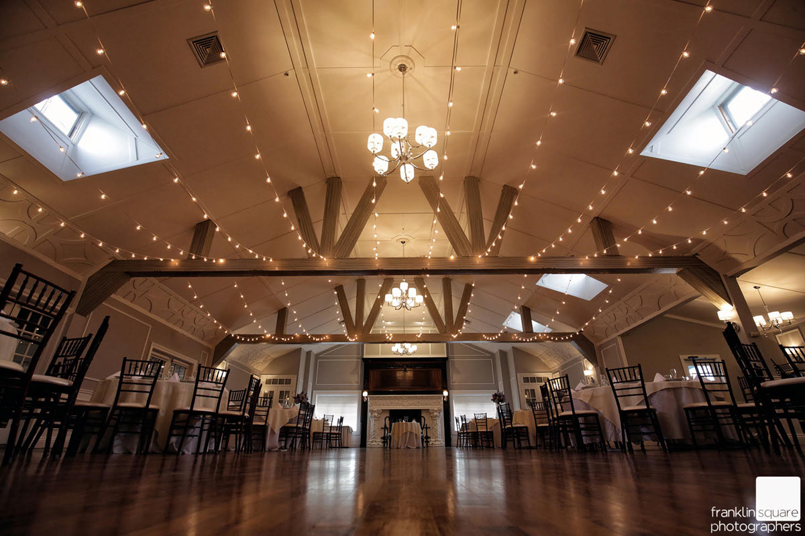

Grand Ballroom
Stewart Manor Country Club
51 Salisbury Ave.
Garden City, NY 11530
The Stewart Manor Country Club is a beautifully renovated catering facility located in Western Nassau County, New York.
The Stewart Manor Country Club is a beautifully renovated catering facility located in Western Nassau County, New York.